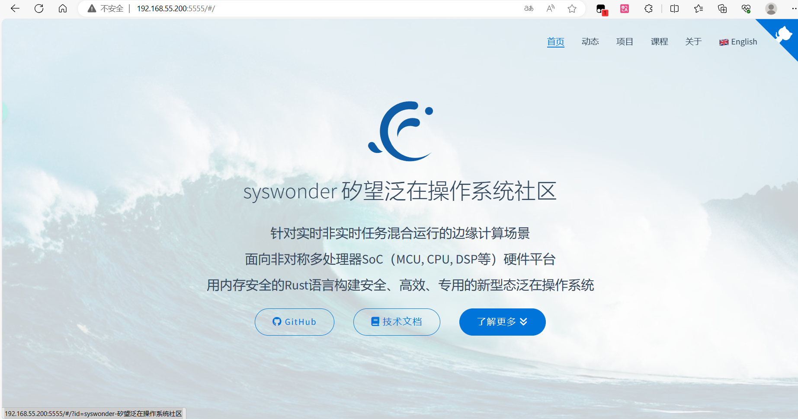

Nginx
RuxOS 支持在 Qemu 上运行 Nginx 构建服务器。
拉取 Nginx 目录
执行：
git clone https://github.com/syswonder/rux-nginx.git ./apps/c/nginx
该命令将拉取Nginx的编译配置文件等文件放到 apps/c/nginx 目录下。
运行样例
如果您只是想要测试nginx的可运行性，而不关心nginx本身运行的内容，可以通过下面的命令直接运行样例
bash ./apps/c/nginx/example_run.sh
创建文件系统镜像
运行时，需要保证文件系统中存在以下文件：
/nginx/logs/error.log
/nginx/conf/nginx.conf
/nginx/conf/mime.types
其中，error.log 是日志文件（但是实际上没有用到），nginx.conf 是 Nginx 配置文件，告诉 Nginx 如何运行以及一些运行的参数。mime.type 是类型转化文件，告诉Nginx如何看待不同类型的文件。
如果 RuxOS 根目录下没有 disk.img，在运行时会自动创建一个符合条件的 img。
如果您想要重新生成镜像，可以运行 apps/c/nginx 目录下的 create_nginx_img.sh。
创建网页文件
在默认设置下运行时，apps/c/nginx 目录下需要有一个名为 html 的文件夹，用来装载 Nginx 服务器的网页。
网页文件也可以设置在其他路径上，详见下面关于 nginx.conf 以及 9p 的内容
运行 Nginx
在上面的步骤完成后，在RuxOS的根目录下运行下面的命令，可以在5555端口上启动Nginx服务器。
make A=apps/c/nginx/ LOG=info NET=y BLK=y ARCH=aarch64 SMP=4 run
参数解释：
A: 该参数指向 Nginx 应用所在的目录。LOG:LOG表示输出的日志等级，更低的日志等级意味着更详细的输出。可选包含：error,warn,info,debug,trace。NET: 该参数用于使能 qemu 的 virtio-net。BLK: 该参数用于使能 qemu 的 virtio-blk。ARCH:ARCH表示将 RuxOS 运行在何种架构上，可选架构参数包括:x86_64,aarch64,riscv64.SMP:SMP用于使能 RuxOS 的多核 feature，紧跟着的数字表示启动的核数。
注意，如果在第一次运行之后修改了源码或者运行参数，请运行下面的命令清理应用文件
make clean_c A=apps/c/nginx
如何连接、测试
当访问服务器的5555端口时，便可以访问网页

使用 Musl libc
默认情况下，RuxOS 的Nginx使用自定义的 C 应用程序 ruxlibc。
通过添加 MUSL=y 到运行的命令中，就能借助 RuxOS 集成好的标准 musl libc来编译、链接。
使用 9pfs
默认情况下，RuxOS 通过命令行中的 ARGS 参数来向应用传递参数，这种方法可能会带来不便。现在 RuxOS 已经成功集成了 9pfs，用于 host 和 qemu 进行文件目录的共享，即可以通过应用自己的配置文件来传递参数。
运行下面的命令:
make A=apps/c/nginx/ LOG=info NET=y BLK=y FEATURES=virtio-9p V9P=y V9P_PATH=./apps/c/nginx/html/ ARCH=aarch64 SMP=4 run
参数解释:
V9P: 使用V9P=y来使能 qemu 的 virtio-9p 后端。FEATURES=virtio-9p：告诉 RuxOS 启用 9p 功能V9P_PATH:V9P_PATH指向 host 上的用于共享的目录，默认情况下这是网页文件的位置。
使用HTTPS
默认情况下，nginx用作http网络服务器，如果您想要使用https，请使用rux-nginx的with_ssl分支
rm -rf ./apps/c/nginx
git clone https://github.com/syswonder/rux-nginx.git -b with_ssl ./apps/c/nginx
其他运行步骤不变
nginx.conf
您可以修改apps/c/nginx目录下的 nginx.conf 文件来对 Nginx 的配置进行修改，包括修改 Nginx 服务器功能、修改服务器参数、修改 Nginx 运行选项等。
注意：
-
除 http 服务器之外的功能尚未验证
-
如果修改服务器参数（比如端口），请对 qemu 的相应设置（比如端口映射）做相应更改
-
修改完 nginx.conf 后请将其复制到文件系统镜像中，您可以通过在
apps/c/nginx目录下运行./create_nginx_img.sh来完成 -
使用 9pfs 时的 nginx.conf 会有所不同，其内容在
apps/c/nginx目录下的 nginx_9p.conf 中，可以通过./create_nginx_img.sh 9p的命令来将其复制到文件系统镜像中